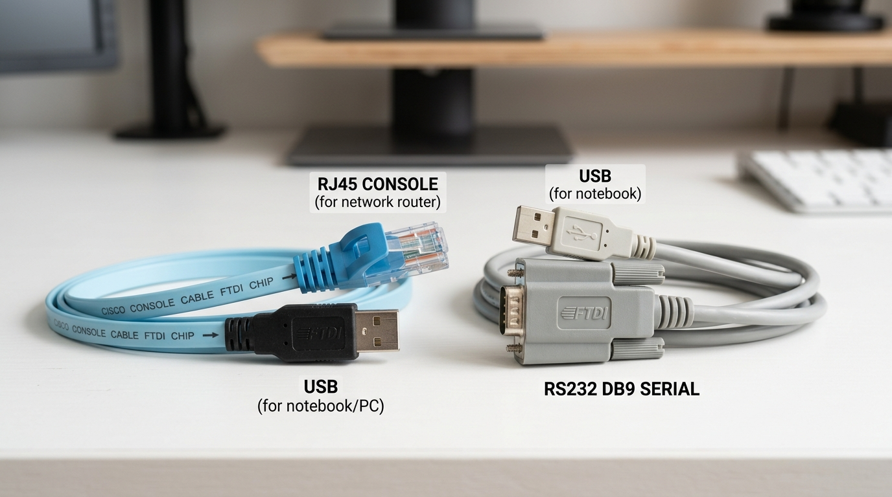

👋 Olá, Técnico! Bem-vindo ao SPARC.
O SPARC foi desenvolvido para automatizar 100% da configuração dos equipamentos de rede. Você não precisa digitar comandos em telas pretas nem memorizar scripts. Basta carregar a Ficha SAIP, conectar os cabos e iniciar o procedimento com um clique!
1. O Que Você Precisa Conectar (Checklist Físico Inicial)
Tenha em mãos estes itens essenciais antes de ligar o roteador na tomada:
1
Cabo Console Serial (USB / RJ45)
Conecte o conector RJ45 na porta CONSOLE do roteador e o plugue USB no seu notebook de trabalho.

Modelos de cabo aceitos:
• Cabo azul plano (recomendado): Conector RJ45 direto para USB com chip interno FTDI.
• Adaptador Serial DB9 para USB: Conector de 9 pinos (RS232) adaptado para USB.
Ambos os modelos comunicam perfeitamente com o SPARC.
⚠️ ATENÇÃO COM O DRIVER DO ADAPTADOR USB (Windows):
Para o SPARC se comunicar com o roteador, o seu cabo USB
deve estar com o driver instalado e funcionando no Windows.
- Verificação no Windows: Ao plugar o cabo, abra o Gerenciador de Dispositivos e veja se em "Portas (COM e LPT)" aparece o cabo sem erros (ex:
USB Serial Port COM3).
- Se houver um aviso amarelo ⚠️: O cabo não funcionará até instalar o driver do fabricante do chip (FTDI, Prolific ou CH340). Cabos originais com chip FTDI instalam o driver sozinhos.
2
Cabo de Rede Ethernet (Azul ou Cinza) — Onde Ligar?
Conecte uma ponta no notebook e a outra ponta obrigatoriamente na porta LAN indicada abaixo:
| Modelo do Equipamento |
Onde Conectar o Notebook (LAN) |
Porta do Link Operadora (WAN) |
Dica de Conexão |
| Cisco Série 900 (C921-4P) |
👉 Porta 5 (GE 5) |
Porta 4 (GE 4) |
Use a Porta 5. Não use as portas 0 a 3. |
| Cisco Série 800 (C841M) |
👉 Porta 5 (GE 0/5) |
Porta 4 (GE 0/4) |
Porta amarela GE 0/5. |
| Cisco Série 1900 / 1921 / 1941 |
👉 Porta 1 (GE 0/1) |
Porta 0 (GE 0/0) |
Porta GE 0/1 do cliente. |
| HPE Comware (MSR954 / MSR930) |
👉 Porta 1 (GE 0/1) |
Porta 0 (GE 0/0) |
Porta GigabitEthernet0/1. |
| Fortinet FortiGate 40F |
👉 Porta LAN 1 |
Porta WAN |
Conecte obrigatoriamente na Porta LAN 1. |
3
Ficha SAIP do Cliente (.PDF ou .TXT)
Arquivo fornecido pelo Suporte Office / Despacho contendo a designação do circuito, dados cadastrais do cliente e blocos de IP WAN/LAN. Mantenha o arquivo salvo no seu computador de campo pronto para ser carregado no SPARC.
⭐ ATUALIZAÇÃO DE FIRMWARE: OBRIGATÓRIA PELO PADRÃO CLARO
A Claro homologou novas versões oficiais de sistema para todos os modelos de roteadores da rede. Por isso, a atualização do firmware é praticamente certa e necessária em todos os atendimentos.
• Tenha sempre salvos no seu notebook os arquivos homologados pela Claro (Cisco .bin, HPE .ipe, FortiGate .out).
• Deixe a opção "Atualizar Firmware" marcada no SPARC e selecione o arquivo correspondente.
• O SPARC avalia automaticamente: se o roteador já estiver com a versão homologada mais recente, ele avisa e poupa tempo; se estiver desatualizado, ele grava a versão nova e reinicia o roteador sozinho!
2. Como Executar o Processo Padrão no SPARC (Passo a Passo)
O processo foi feito para ser simples e automático. Siga estes 4 passos na tela do SPARC:
1
Abra o SPARC e Confira a Porta Serial
Abra o SPARC pelo ícone na Área de Trabalho. No topo da tela, confirme a sua Porta Serial (ex: COM3, COM4).
2
Carregue a Ficha SAIP do Cliente com 1 Clique
Clique no botão vermelho de destaque "📂 Selecionar Arquivo SAIP (.pdf / .txt)" e selecione o arquivo. O nome do cliente, designação e os IPs aparecem preenchidos na tela automaticamente.
3
Selecione o Adaptador de Rede e o Firmware Homologado
Escolha a sua placa Ethernet e mantenha marcada a caixa "Atualizar Firmware", indicando o arquivo homologado pela Claro (Cisco .bin, HPE .ipe ou FortiGate .out).
4
Clique no Botão Verde: "INICIAR PROVISIONAMENTO AUTOMÁTICO"
Pronto! O SPARC assume o controle do equipamento e executa todo o fluxo de forma 100% autônoma:
- Restaura as configurações de fábrica e remove senhas antigas;
- Grava a versão oficial de firmware homologada pela Claro e reinicia o roteador;
- Aplica todas as regras e rotas da Ficha SAIP;
- Configura a placa de rede do seu notebook e testa o Ping na LAN, na WAN e na Internet;
- Gera e abre o relatório de homologação em PDF com selo de aprovação para anexar na OS.
3. O Que Fazer Durante o Atendimento? (Dúvidas Rápidas)
📄 Relatório de Homologação em PDF (Pronto para a OS):
Assim que a barra atingir 100%, o SPARC gera e abre na tela um relatório oficial em PDF com selo de aprovação contendo todos os testes validados. O arquivo fica salvo na pasta C:\SPARC\Relatorios pronto para você anexar na sua Ordem de Serviço (OS).
🔑 Se o equipamento pedir senha antiga na tela:
Se você souber a senha que estava no roteador, digite-a para ganhar tempo. Se não souber a senha antiga, basta clicar na opção "Zerar Configuração de Fábrica" que o SPARC recupera o equipamento sozinho pelo modo de manutenção.
📋 Se o SPARC não preencher os dados ao carregar a Ficha SAIP:
Isso ocorre quando o arquivo recebido não possui camada de texto (gerado incorretamente pelo suporte). Solicite ao Suporte Office / Backoffice o reenvio da Ficha SAIP emitida conforme as instruções da Página 3 deste manual.
⚠️ Se a porta serial não aparecer ou der erro de conexão:
Desconecte o plugue USB do notebook, aguarde 3 segundos, conecte novamente em outra porta USB e clique no botão de atualizar ao lado da lista de portas. Lembre-se de verificar o driver do cabo no Gerenciador de Dispositivos (conforme explicado na Página 1).
🏢 Atenção, Equipes de Apoio Técnico, Planejamento, NOC e Despacho:
O SPARC utiliza leitura automatizada inteligente para extrair diretamente da Ficha SAIP os dados de designação, cliente, IPs e rotas. Para que a automação em campo funcione sem retrabalho, a Ficha SAIP deve ser obrigatoriamente gerada com camada de texto vetorial ativa (texto selecionável).
4. Como Emitir o PDF da Ficha SAIP Corretamente (Passo a Passo)
Siga estas instruções ao gerar o arquivo PDF no sistema SaIP para envio ao técnico de campo:
1
Acesse a OTS no Navegador de Internet (Google Chrome ou Microsoft Edge)
No portal do sistema SaIP, localize e abra a OTS do circuito. Em seguida, abra o diálogo de impressão pressionando Ctrl + P (ou clique no menu do navegador > Imprimir).
2
Destino da Impressão: Selecione "Salvar como PDF" (Nativo do Navegador)
No campo Destino da caixa de impressão, escolha obrigatoriamente "Salvar como PDF" nativo do Chrome ou Edge.
⛔ O QUE NUNCA UTILIZAR: Jamais use impressoras virtuais externas (CutePDF Writer, PDFCreator, Foxit PDF Printer ou Microsoft XPS) e nunca marque a opção "Imprimir como imagem". Essas ferramentas rasterizam as letras transformando o documento em uma foto opaca, impedindo a leitura dos dados pelo SPARC.
3
Definições de Layout e Formatação da Página
Configure exatamente os seguintes parâmetros na tela de impressão:
- Layout: Selecione obrigatoriamente "Retrato" (formato vertical A4 oficial de 2 páginas). Não use paisagem.
- Tamanho do Papel: A4 | Margens: Padrão | Escala: 100% (Padrão).
- Opções: Marque obrigatoriamente a opção "Gráficos de segundo plano" (preserva as cores das tabelas e divisórias da OTS).
4
Regra de Ouro da Validação: Teste do Mouse (Antes de Anexar na OS)
Antes de despachar o arquivo ao técnico de campo ou anexar no chamado, faça o teste de 3 segundos:
- Abra o PDF recém-gerado no leitor de PDF ou no próprio navegador.
- Com o cursor do mouse, clique e arraste sobre o nome do cliente ou o endereço IP WAN/LAN para selecionar as palavras.
- Pressione Ctrl + C e cole (Ctrl + V) em qualquer bloco de notas.
✅ TESTE APROVADO: Texto copiado normalmente como caracteres legíveis. O arquivo está homologado e o SPARC fará a leitura 100% imediata!
❌ TESTE REPROVADO: O mouse não seleciona as letras (age como foto). Refaça a exportação usando "Salvar como PDF" nativo.
5. Guia Rápido de Boas Práticas — Emissão de PDF
| Item de Configuração |
Padrão Homologado (Correto) |
O Que Evitar (Causa Incompatibilidade) |
| Destino de Impressão |
👉 Salvar como PDF (Nativo Chrome/Edge) |
CutePDF, PDFCreator, Foxit, Microsoft XPS |
| Orientação do Documento |
👉 Retrato (Vertical A4 — 2 Páginas) |
Paisagem (Horizontal) ou dividido em 4 páginas |
| Camada de Conteúdo |
👉 Texto Vetorial Selecionável com Mouse |
Bitmap / Imagem Rasterizada ("Imprimir como imagem") |
| Elementos Visuais |
👉 Gráficos de Segundo Plano Ativados |
Gráficos desmarcados (faz tabelas e caixas sumirem) |